瑞吉外卖项目实战day1
适合新手小白入门Java后端开发的Springboot + Mybatis Plus 项目。
项目构建
配置静态资源映射
为了访问静态资源，要进行静态资源映射的配置。
Springboot将静态资源都放在resource/static目录下，会进行自动配置静态资源映射。
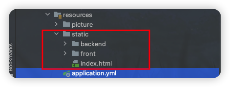
如果静态资源没放在resource/static目录，要书写配置类实现WebMvcConfigurer接口，重写addResourceHandlers方法，进行手动配置。
1 |
|
不推荐继承WebMvcConfigurationSupport类，而是使用实现WebMvcConfigurer接口，因为继承类会覆盖Springboot提供的自动静态资源映射配置，而实现接口是在原有的配置上附加映射配置。
配置文件
配置Application.yml配置文件，核心是服务器端口号+数据库四要素。
此外还有mybatis-plus的一些配置。
1 | server: |
实体类
导入lombok依赖，通过@Data注释在实体类中只需要定义属性名，会自动生成默认的无参构造方法和setter/getter方法。
1 | <dependency> |
@AllArgsConstructor：提供全部参数的构造方法，会覆盖@Data提供的无参构造方法。
@NoArgsConstructor：提供默认的无参构造方法。
统一结果封装
使用Result类将服务器的响应进行统一格式的结果封装。
属性：状态位code（0/1）、错误信息msg（String）、数据data（泛型T）
1 |
|
业务实现
编写Controller表现层业务方法时，首先需要通过前端代码以及浏览器开发者工具明确几个要素：
请求类型
请求路径
请求参数：尽量封装成实体类对象，通过getter得到请求参数。
@PathVariable：RESTful风格的参数@RequestBody：json格式数据@RequestParam
返回值类型：看前端代码需要服务器响应什么类型的数据。
后台登录功能
表现层要素
1 | // login.js |
请求类型：POST
请求路径：/employee/login
请求参数：包含username和password的json格式数据，可以封装成Employee实体类对象
1 | if (String(res.code) === '1') { |
返回值类型：由于前端需要服务端的响应包含data属性，所以返回值应该是Result<Employee>类型
核心业务思路
步骤1：先判断请求参数username/password是否为空，任一为空就不用再查表了；
步骤2：根据请求参数的username查表 – LambdaQueryWrapper封装查询条件；
步骤3：没查到数据（username）则返回失败；
步骤4：查询到了数据则进行密码比对，密码不一致返回失败 – 登录功能的密码考虑到安全性可以进行md5加密后再存入数据库：DigestUtils工具类的md5DigestAsHex(String.getBytes())方法；
步骤5：登陆成功，将员工id存入Session备用。
复习Session：一种服务端的会话跟踪技术，在一次会话的多次请求中共享数据。
2
3
4
5
6
HttpServletRequset.getSession().setAttribute(String key, Object o);
// 获取Session内容
HttpServletRequset.getSession().getAttribute(String key);
// 删除Session内容
HttpServletRequset.getSession().removeAttribute(String key);
登录业务完善
只有登录成功了才得以访问其他页面，未登录则跳转到登录页面——在过滤器或拦截器中判断用户是否登录。
实现Filter过滤器
在LoginCheckFilter类中实现
Filter接口，加类注释@WebFilter，重写doFilter方法；1
2
3
4
5
6
7
8
9
public class LoginCheckFilter implements Filter {
/**
* Servlet的过滤器对登录功能进行数据增强：访问界面如果未登录则自动跳转到登录界面
* */
public void doFilter(ServletRequest servletRequest, ServletResponse servletResponse, FilterChain filterChain) throws IOException, ServletException {
filterChain.doFilter(servletRequest, servletResponse);
}Springboot启动类上加
@ServletComponentScan注释；
过滤器登录检查逻辑
获取本次请求的URI
定义不需要拦截的请求（静态资源+登录登出有关的资源路径），并判断本次请求是否需要被处理
1
2
3
4
5
6
7
8
9
10
11/* 包含通配符的路径匹配 */
public static final AntPathMatcher PATH_MATCHER = new AntPathMatcher();
// -----------具体实现-----------
public boolean checkFilter(String[] urls, String requestURI) {
for (String url : urls) {
if (PATH_MATCHER.match(url, requestURI)) {
return true;
}
}
return false;
}如果不需要处理则直接放行
判断登录状态（通过Session），如果已登录则放行，如果未登录则通过输出流方式返回结果：
1
response.getWriter().write(JSON.toJSONString(Result.error("NOTLOGIN")));
使用JSON.toJSONString要导入fastjson坐标。
添加员工功能
表现层要素
1 | // member.js 新增---添加员工 |
请求类型：POST
请求路径：/employee
1 | addEmployee(params).then(res => { |
请求参数：包含username、name、phone、sex、idNumber的json格式数据，可以封装成Employee实体类对象
返回值类型：由于前端需要服务端的响应只有code和msg属性，所以返回值写成Result<String>类型。
核心业务思路
Controller表现层直接调用Service层的save添加实体轮类Employee对象，在Mapper层对象解析成Employee数据表中的字段进行数据添加。
添加员工业务完善
操作数据库时insert操作要注意：① 数据表中not null的字段必须有值； ② 数据表中主键、not unique字段都不能重复，要进行判断。
- Employee数据表结构：

前端的表单中提交过来的参数填充的字段有：username、name、phone、sex、id_number，主键id雪花算法自动生成、status具有默认值1，所以后面4个not null字段的值需要我们手动来添加：
而创建人、创建时间、修改人、修改时间字段属于公共字段，不仅员工表有这些字段，在菜品表、分类表等其他表中，也拥有这些字段。那我们有没有办法让这些字段在一个地方统一管理呢？
解决方案：使用MybatisPlus给我们提供的公共字段自动填充功能。
- 在Employee数据表中，username字段not unique不能重复：
步骤1：获取请求参数中的username，调用Service方法检查用户名是否重复；
步骤2：用户名重复则无法添加，抛出异常（进行统一异常处理）并响应给前端提示信息；用户名未重复则操作数据库进行添加操作。
公共字段自动填充
步骤1：按照框架要求编写元数据对象处理器MyMetaObjectHandler类，在此类中统一对公共字段赋值，此类需要实现MetaObjectHandler接口，实现接口之后，重写两个方法，一个是插入时填充，一个是修改时填充（字段填充方式，使用metaObject的setValue方法来实现）：
1 |
|
步骤2：在实体类的属性上方加入@TableFiled注解，指定自动填充的策略
1 | // 插入时填充字段 |
通过LocalThread获取用户id
关于id的获取，我们之前是存到session里的，但在MyMetaObjectHandler类中不能获得HttpSession对象，所以我们需要用其他方式来获取登录用户id。
我们可以使用ThreadLocal来解决这个问题：在学习ThreadLocal之前，我们需要先确认一个事情，就是客户端发送的每次http请求，对应的在服务端都会分配一个新的线程来处理，在处理过程中涉及到下面类中的方法都属于相同的一个线程：
LoginCheckFilter中的doFilter方法EmployeeController中的响应方法MyMetaObjectHandler中的insertFill或者updateFill方法
ThreadLocal并不是一个Thread，而是Thread的局部变量；当使用ThreadLocal维护变量时，ThreadLocal为每个使用该变量的线程提供独立的变量副本；所以每一个线程都可以独立地改变自己的副本，而不会影响其它线程所对应的副本；ThreadLocal为每个线程提供单独一份存储空间，具有线程隔离的效果，只有在线程内才能获取到对应的值，线程外则不能访问。
具体实现——
我们可以在LoginCheckFilter过滤器的的doFilter方法中获取当前登录用户id，并调用ThreadLocal的set方法来设置当前线程的线程局部变量的值（用户id)，然后在MyMetaObjectHandler的insertFill或updateFill方法中调用ThreadLocal的get方法来获得当前线程所对应的线程局部变量的值（用户id)。
- 步骤1：common包下新建BaseContext类
1 | /** |
- 步骤2：在LoginCheckFilter类（每次请求都会首先经过过滤器类）中获取当前Session的值(用户id)，使用BaseContext封装的
setCurrentId方法封装id值 - 步骤3：在MyMetaObjectHandler类中获取当前请求所在线程的id值。
统一异常处理
- 统一异常处理框架
- 在common包下添加一个ProjectExceptionAdvice统一异常处理类，加类注释
@RestControllerAdvice； - 方法参数是异常类型的对象ex，方法上加类注释
@ExceptionHandler(异常类型.class)，返回值一般是Result<String>；
- 在common包下添加一个ProjectExceptionAdvice统一异常处理类，加类注释
1 |
|
- 异常逻辑判断（有些时候需要，有时不用）–
ex.getMessage()方法很重要
1 | if(ex.getMessage().contains("Duplicate entry")){ // Duplicate entry 'lisi' for key 'employee.idx_username' |
员工信息分页查询
表现层要素
1 | // member.js |
请求类型：GET
请求路径：/employee/page
1 | methods: { |
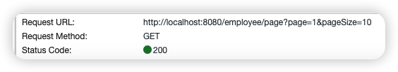
请求参数：包含page、pageSzie和可选参数name，因为是get请求，所以请求参数是在请求头中的普通参数
返回值类型：由于前端需要服务端的响应除了code属性还有res.data.records和res.data.total属性，很明显方法返回值是Result<Page>类型。
Mybatis-Plus中分页插件配置
要在Springboot项目中使用分页查询，必须要配置Mybatis-Plus的分页插件：
在config包下新建MybatisPlusConfig配置类，在方法中首先创建一个MybatisPlus拦截器，在拦截器中再添加分页查询的拦截器，不要忘了将方法注释为@Bean方法。
1 | /** |
核心业务思路
分页查询的请求参数是page、pageSize，响应参数也是page，它的业务逻辑比较固定，直接展示实现基本分页功能的表现层代码了：
1 |
|
禁用/启用员工账号
在员工管理列表页面，可以对某个员工账号进行启用或者禁用操作：账号禁用的员工不能登录系统，启用后的员工可以正常登录。【前端业务】需要注意，只有管理员（admin用户）可以对其他普通用户进行启用、禁用操作，所以普通用户登录系统后启用、禁用按钮不显示。
表现层要素
1 | // member.js --启用禁用接口 |
请求类型：PUT
请求路径：/employee
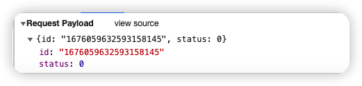
请求参数：包含id和status的json格式数据，可以封装成Employee实体类对象（这里注意一下，status为0则表示客户端的禁用请求，status为1则表示客户端的启用请求）
1 | enableOrDisableEmployee({ 'id': this.id, 'status': !this.status ? 1 : 0 }).then(res => { |
返回值类型：由于前端需要服务端的响应只有code属性，所以返回值写成Result<String>类型。
核心业务思路
将请求参数传入Service的updateById方法，就可以更改相应employee数据的status字段值。
但是通过日志我们发现，数据并没有修改成功，原因是服务端接收到的Long类型的请求参数employee.id 通过前端js已经丢失了精度，导致id不准确，无法从数据库中找到相应id的数据！
解决方案是：我们可以在服务端给页面响应json数据时进行处理，将Long型数据统一转为String字符串。
拓展mvc的消息转换器
可以自定义服务器Result对象序列化成json数据的细节，比如数据类型Long→String，比如自定义时间格式等。
步骤1：common包下配置对象映射器（工具类可以直接复制代码）
1 | /** |
步骤2：扩展Mvc框架的消息转换器
config包下的WebMvcConfig配置类，实现WebMvcConfigurer接口，重写extendMessageConverters方法（方法在项目启动时就被调用）。springboot自己的消息转换器可以把返回的Result对象序列化成json数据响应给前端，而我们可以根据自己的需要扩展消息转换器。
1 |
|
编辑员工信息
流程分析
后续我们会开发一些比较复杂的业务功能，一个业务功能处理多个请求发送多个响应数据，所以流程分析是很重要的。
- 在list.html页面中，点击编辑按钮，页面跳转到add.html中，并在url中携带employee的id；
- 发送ajax请求（回显数据的请求），将id提交给服务器；
- 服务器接收请求，根据id查询employee信息，并将员工信息响应给页面；
- 页面接收服务端的json数据，并通过Vue的双向绑定进行员工信息回显；
- 点击保存按钮，发送ajax请求（修改数据的请求），将id和表单数据一起提交至服务端；
- 服务端接收员工信息，根据id修改员工的信息，完成后给页面响应。
表现层要素
- 回显数据的请求
1 | // member.js -- 修改页面反查详情接口 |
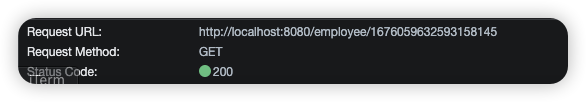
请求类型：GET
请求路径：/employee/{id}
请求参数：只有员工id，且是RESTful风格，需要加@PathVariable注解
1 | queryEmployeeById(this.id).then(res => { |
返回值类型：前端需要服务端的响应data属性，所以方法返回值是Result
- 修改数据的请求
1 | // 修改---添加员工 |
请求类型：PUT
请求路径：/employee
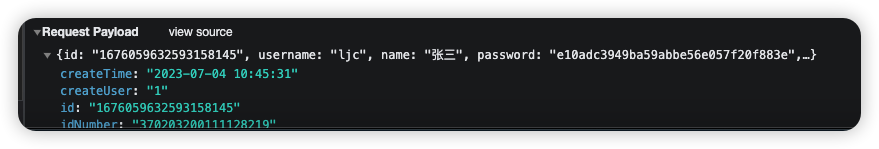
请求参数：json格式的员工信息
1 | editEmployee(params).then(res => { |
返回值类型：前端只要服务端的响应code和msg属性，所以方法返回值是Result<String>类型即可。
核心业务思路
通过员工id查询Employee数据表进行数据回显；前端点击修改按钮后，服务端接收修改后的Employee对象请求参数，调用Service层的updateById传回employee对象即可修改数据表内容。
新增菜品分类
数据模型
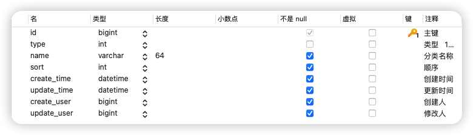
菜品分类id字段是主键，name分类名称是unique唯一的，type为1表示菜品分类，type为2表示套餐分类。
表现层要素
1 | // category.js -- 新增接口 |
请求类型：POST
请求路径：/employee
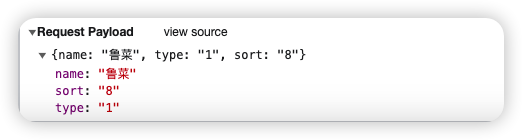
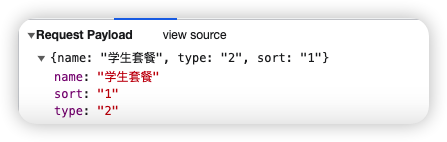
1 | addCategory({'name': classData.name,'type':this.type, sort: classData.sort}).then(res => { |
请求参数：json格式的请求参数，包含name、type、sort字段，可以封装成Category对象
返回值类型：前端需要服务端的响应只有code和msg属性，所以方法返回值是Result<String>类型
核心业务思路
前面已经做过新增员工的业务逻辑，新增菜品分类的其实都是一样的，（新增业务的重点）保证每一个not null的字段都有赋值且unique的字段没有重复，再通过Service层的save方法调用进而mapper操作数据库进行添加数据。
分类信息分页查询
表现层要素
1 | // category.js -- 查询列表接口 |
请求类型：GET
请求路径：/category/page
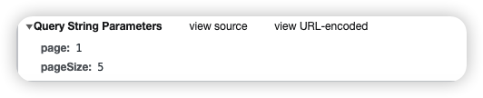
1 | await getCategoryPage({'page': this.page, 'pageSize': this.pageSize}).then(res => { |
请求参数：分页查询，请求参数是普通请求头里的page、pageSize。
返回值类型：Result<Page>类型
核心业务思路
对于分页查询来说，我们一定要记得配置MybatisPlus的分页查询插件。除此之外，表现层的业务代码非常简单：分页构造器+条件构造器（排序条件），调用Service层的page函数即可，最终把分页构造器响应给前端用来页面的展示。
分页插件的配置，再复习一下：
2
3
4
5
6
7
8
9
public class MybatisPlusConfig {
public MybatisPlusInterceptor mybatisPlusInterceptor(){
MybatisPlusInterceptor interceptor = new MybatisPlusInterceptor();
interceptor.addInnerInterceptor(new PaginationInnerInterceptor());
return interceptor;
}
}
删除菜品分类
表现层要素
1 | // category.js -- 删除当前列的接口 |
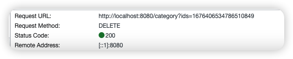
请求类型：DELETE
请求路径：/category/{ids}
请求参数：RESTful风格的菜品id参数，如果方法参数名和前端请求参数名不一致，需要在注释后面加@PathVariable("参数名")参数名进行映射。
1 | deleCategory(id).then(res => { |
返回值类型：Result<String>类型
核心业务思路
因为请求参数是Category数据表的主键值id，所以直接调用Service层的removeById删除数据即可。和新增业务必须考虑的not null和unique字段一样，删除业务也有必须考虑的点：也就是当前要删除的数据，是否跟其他表中的数据相关联。对于当前来说，当菜品分类或套餐分类关联了其他菜品或套餐时，该分类将不允许被删除，所以我们需要进一步完善我们的删除业务逻辑。（是否可以直接把关联通过外键约束等体现在数据库中，这需要进一步优化数据库表？复习完mysql再回来研究）
MybatisPlus中的Service层提供的删除方法不能满足我们的业务需求，所以我们在Service层手动添加remove方法：我们需要在删除数据之前，根据id值，去Dish表和Setmeal表中（category_id字段）查询是否关联了数据：如果存在关联数据，则不能删除，并抛一个自定义的业务异常。
复习一下统一异常处理：自定义业务异常
步骤1：在exception包下创建响应的Exception类
2
3
4
5
6
7
8
* 自定义的业务异常
* */
public class ServiceException extends RuntimeException{
public ServiceException(String message){
super(message);
}
}步骤2：在统一异常处理类中自定义异常处理方法
2
3
4
5
6
7
8
* 异常处理方法
* */
public Result<String> doServiceException(ServiceException ex){
log.info(ex.getMessage());
return Result.error(ex.getMessage());
}
修改菜品分类
表现层要素
1 | // category.js -- 修改接口 |
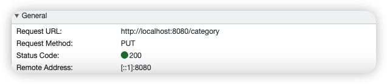
请求类型：PUT
请求路径：/category
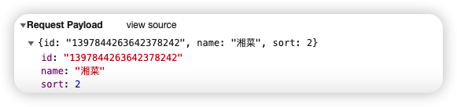
请求参数：json格式的菜品id、name、sort参数，封装成Category对象。
1 | editCategory({'id':this.classData.id,'name': this.classData.name, sort: this.classData.sort}).then(res => { |
返回值类型：Result<String>类型
这里的数据回显完全交由前端来处理，我们简单了解下前端是如何完成数据回显的即可。页面首先通过
scope.row传递当前行的数据对象，通过v-model双向绑定完成数据的回显。
核心业务思路
没什么好讲的，直接调用Service原生的updateById方法把实体类对象传进去。
文件上传与下载
文件上传
文件上传，也叫upload，是指将本地图片、视频、音频等文件上传到服务器中，可以供其他用户浏览或下载的过程。
文件上传的前端业务我们不需要掌握，只需要了解文件上传是通过采用post方式提交数据即可。Spring框架在spring-web包中对文件上传进行了封装，大大简化了服务端代码，我们只需要在Controller的方法中声明一个MultipartFile类型的参数即可接收上传的文件：
1 |
|
这里的MultipartFile类型的参数名不是随意定的，要和前端请求参数中Form-Data的
name值一致才可以！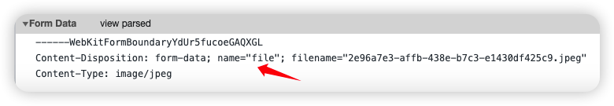
文件下载
文件下载，也称为了download，是指将文件从服务器传输到本地计算机的过程，本质上就是服务端将文件以流的形式写回浏览器的过程。通过浏览器进行文件下载，通常有两种表现形式：① 以附件形式下载，弹出保存对话框，将文件保存到指定磁盘目录；② 直接在浏览器中打开。
文件上传核心业务实现
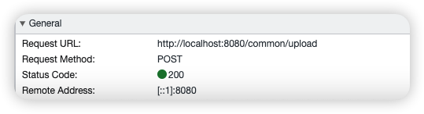
请求类型：POST
请求路径：/common/upload
请求参数：MultipartFile类型的对象 file
方法返回值：Result<String>
1 | // 注入配置文件的属性 |
因为上传至服务器的是一个临时文件（完成本次请求后会被删除），所以我们需要设定文件转存到指定位置，在yml配置文件中设置保存在服务器中的路径并通过@Value("${xxx}")获得路径：
1 | # 自定义下载上传图片的路径配置 |
文件下载核心业务实现
前端页面的ElementUI在上传完图片后发送请求，服务端以流的方式（输出流）将文件写回给浏览器，在浏览器中展示图片：
1 | handleAvatarSuccess (response, file, fileList) { |
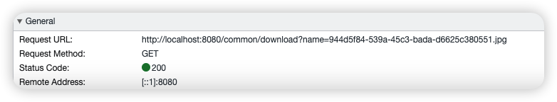
请求类型：GET
请求路径：/common/download
请求参数：String类型的文件名name
方法返回值：无
1 | /** |
文件下载中有一个容易被忽视的点：浏览器需要知道文件的类型，所以必须设置相应数据的类型
response.setContentType，否则会导致下载失败。
新增菜品
流程分析
- add.html页面发送ajax请求，请求服务器获取菜品分类并展示到下拉框中
- 选择图片进行上传，请求服务器将图片保存在服务器当中
- 上传成功后前端会自动发送下载请求，回显上传的图片
- 点击保存按钮，发送ajax请求，将菜品相关json数据提供到服务器端进行处理
表现层要素
上传下载请求上一节讲的很明白了这里就不说了，主要讲一下第一个请求（是容易被忽略掉的）和第四个请求。
- 获取菜品分类并展示到下拉框
1 | // 获取菜品分类列表 |
请求类型：GET
请求路径：/category/list
1 | // 获取菜品分类 |
请求参数：菜品分类Category对象中的分类类型type，可以封装成Category对象
方法返回值：前端得到服务器响应的结果有data属性，返回值应该是Result<List>类型，将查询到的列表响应给前端
- 将新增菜品json数据提交
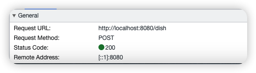
请求类型：POST
请求路径：/dish

请求参数：json格式的dish菜品信息，外加flavors是一个json数组。而flavors不是Dish类中的属性，Dish对象不足以接收本次请求的参数，所以需要导入Dish的增强类DishDto，用于封装页面提交的数据。
DTO，全称为
Data Transfer Object，即数据传输对象，一般用于展示层与服务层之间的数据传输。
2
3
4
5
6
7
8
9
public class DishDto extends Dish {
private List<DishFlavor> flavors = new ArrayList<>();
private String categoryName;
private Integer copies;
}
1 | if (this.actionType == 'add') { |
返回值类型：Result<String>类型
核心业务思路
- 获取菜品分类并展示到下拉框
将请求参数type作为查询条件，调用Service层的list将菜品分类列表响应给前端即可。
- 将新增菜品json数据提交
由于请求参数是json格式的嵌套，且flavors口味数据并不在Dish数据表中，所以要完成新增菜品的业务我们需要：① 在dish数据表中添加菜品基本信息； ② 在dish_flavor数据表中添加口味信息。
步骤1：因为要在两张数据表中添加数据，所以不能用MyabtisPlus提供好的Service层方法，我们在Service中自定义新增方法；
因为这里要在多张表中添加或修改数据，所以要加入事务管理：① 在Service层方法或类上加注释@Transactional； ② 在启动类上加注释@EnableTransactionManagement.
步骤2：添加菜品的基本信息到dish菜品表this.save(dishDto);；（这里可以直接传dishDto对象）
步骤3：添加菜品口味数据flavors到菜品口味表dish_flavor，要注意dish_id（是一个not null字段）无法通过flavors列表赋值要通过Dto对象手动set。
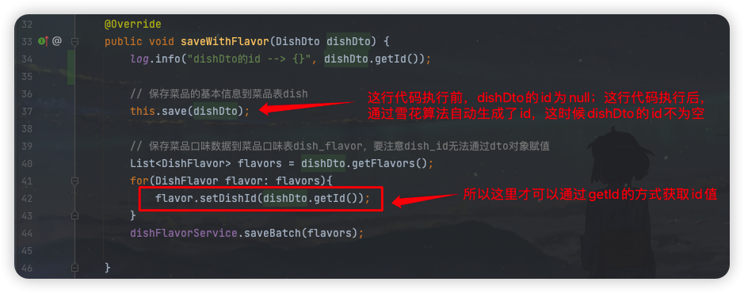
菜品信息分页查询
流程分析
这里的分页查询其实也是发送了两次请求：
- 请求参数page、pageSize和可选参数name，发送分页请求并回显在页面上；
- 向服务端发送下载请求，将图片回显到页面上。（这个请求前面的CommonController表现层已经实现功能响应）
核心业务思路
分页查询前面已经做过好多了，这里的分页查询图片列和菜品分类列比较特殊：
- 图片列：会用到文件的下载功能
- 菜品分类列：由于我们的dish菜品表只保存了category_id，所以我们需要在category分类表中查询category_id对应的菜品分类名称，从而回显数据

因为代码中用到了几个比较关键的知识点，所以这里我直接展示业务代码，也方便到时候复习来看：
1 |
|
修改菜品
流程分析
- 页面发送ajax请求，请求服务器获取分类数据，用于菜品分类下拉框的数据回显（之前已经实现过了）
- 页面发送ajax请求，请求服务端，根据id查询当前菜品信息，用于菜品信息回显
- 页面发送请求，请求服务端进行图片下载，用于页面图片回显（之前已经实现过了）
- 点击保存按钮，页面发送ajax请求，将修改后的菜品相关数据以json形式提交到服务端
表现层要素
- 回显数据
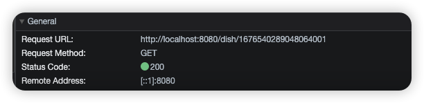
请求类型：GET
请求路径：/dish/{id}
请求参数：RESTful风格的菜品id
1 | queryDishById(this.id).then(res => { |
方法返回值：前端用到了响应的data.flavors属性，所以响应的数据一定是Result
- 提交修改数据
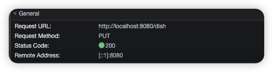
请求类型：PUT
请求路径：/dish
请求参数：json格式的DishDto对象
1 | editDish(params).then(res => { |
方法返回值：Result<String>
核心业务思路
- 回显数据
这里的数据回显还是值得一提的。通常来说数据回显就是以id作为请求参数向服务端发送查询请求，在以id作为主键的数据表中查询到该条数据并将该对象作为相应参数返回并回显在页面上。但是这里回显的数据内容除了以id作为主键的dish菜品表外，还有flavors口味信息，需要在dish_flavor表中查询多条数据。
步骤1：在Service层自定义一个根据菜品id查询的业务层方法；
步骤2：根据id查询dish菜品表中的基本信息，只需要调用MybatisPlus原生的getOne方法得到查询到的Dish对象；
步骤3：因为要在dish_flavor表再做查询，而Dish对象没有flavors属性，所以定义一个DishDto增强对象，并进行Dish的对象拷贝；
步骤4：根据DishDto的id属性查询dish_id = id的DishDto对象列表，set给DishDto的flavors属性，将DishDto响应给前端。
提交修改数据
很显然这里也要涉及两张表dish表和dish_flavor表的修改操作，所以先在Service实现类上加上注释
@Transactional。步骤1：先在Service实现类上加上注释
@Transactional；
步骤2：将请求参数DishDto传入MybatisPlus原生的updateById方法修改dish表中的菜品基本信息；
步骤3：在dish_flavor表中涉及多条数据的修改，所以这里的修改我们将其拆分为删除+添加两个过程来完成：首先是将dish_id = DishDto.id的数据删除；
步骤4：再将DishDto.flavors这个列表通过saveBatch方法添加到口味表中，其中dish_id字段在DishDto.flavors中没有相应的属性对应，要进行手动的set。